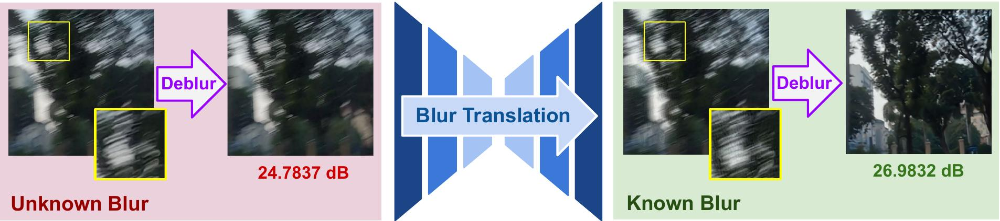

Blur2Blur: Blur Conversion for Unsupervised Image Deblurring
on Unknown Domains
- Bang-Dang Pham1
- Phong Tran2
- Anh Tran1
- Cuong Pham1,3
- Rang Nguyen1
- Minh Hoai1,4
- 1VinAI Research
- 2MBZUAI
- 3PTIT
- 4Stony Brook University
Our code would be released soon!
Deblurred result with real-blur captured from mobile device.
Abstract
This paper presents an innovative framework designed to train an image deblurring algorithm tailored to a specific camera device. This algorithm works by transforming a blurry input image, which is challenging to deblur, into another blurry image that is more amenable to deblurring. The transformation process, from one blurry state to another, leverages unpaired data consisting of sharp and blurry images captured by the target camera device. Learning this blur-to-blur transformation is inherently simpler than direct blur-to-sharp conversion, as it primarily involves modifying blur patterns rather than the intricate task of reconstructing fine image details. The efficacy of the proposed approach has been demonstrated through comprehensive experiments on various benchmarks, where it significantly outperforms state-of-the-art methods both quantitatively and qualitatively.
Overview
We address the unsupervised image deblurring problem by training a blur translator that converts an input image with unknown blur to an image with a predefined known blur. The figure shows the effectiveness of our approach. The blurry images before and after translation (left image in each box) exhibit similar visual content but have different blur patterns (zoomed-in patches). While a standard image deblurring technique fails to restore the unknown-blur image, it successfully recovers the known-blur version, yielding an approximate 2.2 dB increase in PSNR score (noted below each deblurred image on the right side of each box
Method
Given a camera, we aim to develop an algorithm to deblur its captured blurry images. We assume access to the camera to collect unpaired sets of blurry images (B) and sharp image sequences (S).
The key component in our proposed system is a blur translator that converts unknown-blur images captured by the camera to have the target known-blur presented in K. This translator is trained using reconstruction and adversarial losses. The converted images have known blur and can be successfully deblurred using the previously trained deblurring model (Zoom for best view).
Results
To evaluate our Blur2Blur model for practical application, we used a video with pronounced hand movements, pre-training the deblurring model on the RSBlur dataset. The results clearly show that our Blur2Blur framework significantly enhances visual clarity compared to using the pre-trained deblurring model alone. Moreover, to further assess the enhancement in hand movement recognition, we validated the deblurred videos using the Hand Pose Estimation model from MediaPipe. The results, shown in the video, highlight a notable improvement in hand pose estimation when using our method. The enhanced sharpness and detail achieved by Blur2Blur enable more accurate and reliable recognition of hand poses. This demonstrates the potential of our Blur2Blur model in applications demanding high-fidelity visualization of hand movements, especially in advanced rehabilitation therapy tools that rely on precise hand movement tracking for effective patient care and recovery.
Acknowledgements
The website template was borrowed from Michaël Gharbi and Ref-NeRF.